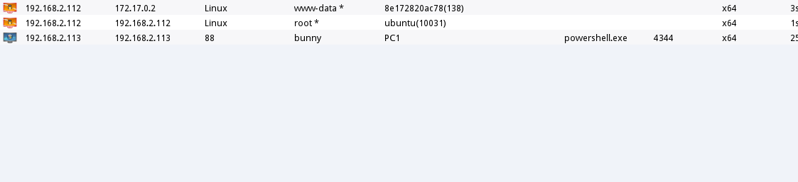

人生那个东西，也许只是在一段刻骨铭心之后才算是真正的开始，但有时候想想，徒留遗憾罢了。
文章首发补天平台，博客备份一个
VulnStack7是红日安全团队最近的一个ATT&CK靶场，靶场地址：http://vulnstack.qiyuanxuetang.net/vuln/detail/9/ 为一个三层靶场，整体拓扑如下。
配置过程这里不再赘述，因为本人主机为linux主机，由于路径问题，导致dmz区域的机器无法正常运行，于是直接砍掉，反正网站为二层的docker环境内，不影响总体操作。且为了增加难度，在PC2安装了安全狗，PC1安装了火绒，于是拓扑变成了下面这样：
记得开启相关服务，在各个机器上。
入口突破
首先对目标进行端口扫描，获取入口点：
nmap -T4 -sC -sV 192.168.52.20
发现开放22端口与8000,访问8000,发现是一个Laravel的网站。
而这个版本的框架是存在一个rce漏洞的，即Laravel <= v8.4.2 debug mode: Remote code execution (CVE-2021-3129)。使用POC测试，发现的确可以成功利用
接下来就直接使用一键化工具，写入一个webshell进去就行啦，蚁剑连接：
进入终端时发现，主机信息处有些特殊：
Linux 8e172820ac78 4.4.0-142-generic #168~14.04.1-Ubuntu SMP Sat Jan 19 11:26:28 UTC 2019 x86_64
猜测可能是docker环境，一般来说有以下两个方法：
- 判断根目录下 .dockerenv 文件
- 查询系统进程的cgroup信息
发现的确为docker环境
下面我们要做的就是docker逃逸了，不过目前我们仅仅是一个www权限，所以来进行提权。看了看版本信息，且目标机器存在gcc,此时我们完全可以使用内核提权
不过根据靶机的信息，我们这里也使用suid的方法进行提权。查找SUID提权的命令如下：
1 | find / -user root -perm -4000 -print 2>/dev/null |
发现存在一个shell程序，尝试运行该文件
发现其就是在执行ps命令而已，此时我们可以使用路径劫持的方法，来获取一个高权限的shell,首先使用蚁剑反弹一个shell回来
然后替换环境以获取到了一个root的shell.这里可以直接获取一个Cs的shell回来或者是MS的shell.
这里为了方便起见，就没有在root的环境下获得会话。下面就是docker逃逸了，在之前我打类似的靶机的时候也遇到docker逃逸的情况，一般使用漏洞进行逃逸或者使用特权模式进行逃逸，我们这里使用特权模式进行逃逸。关于docker逃逸可以参考：https://www.anquanke.com/post/id/179623
即当控制使用特权模式启动的容器时，docker管理员可通过mount命令将外部宿主机磁盘设备挂载进容器内部，获取对整个宿主机的文件读写权限，此外还可以通过写入计划任务等方式在宿主机执行命令。此时查看设备时，会发现拥有很多的设备。
然后新建目录并挂载目录：
1 | mkdir /abc |
最终我们可以通过访问容器内部的/abc路径来达到访问整个宿主机的目的：ls /abc
下面就是写文件或者写计划任务上线即可。
顺便获得了密码文件的内容。通过查看网卡信息，发现后面的192.168.93.0的网段以及本网段192.168.52.0,下面就是横向移动了。
内网横向
因为是上线的Cs所以我们很多操作不是很方便操作，所以我们先对192.168.52.0来进行测试，直接一个ping获取本网段的存活主机信息(可能不是很准确)
1 | for k in $( seq 1 255);do ping -c 1 192.168.99.$k|grep "ttl"|awk -F "[ :]+" '{print $4}'; done |
但是毫无反应，没关系，我们直接搞个sockets代理进去。
发现目标网段内具有30这个主机，我们再对其进行信息收集。发现其开放了8082端口，
访问之，发现是一个OA系统
下面就好说了，拿shell就可以了。首先伪造session登录后台。

然后附件添加一个存储
选择 组织-管理员-附件上传-txt，抓包修改
抓包修改，绕过黑名单 txt修改为 php.
挂好代理，蚁剑成功连接
但此时我们是无法执行命令的，因为有安全狗的缘故，我们执行命令会被拦截

，绕过方法就是使用自定义终端
然后我们就可以执行命令了，因为第二个网段是出网的，所以直接powershel上线即可，

然后就是提权、抓密码一条龙。
而且因为该机器使用域管理员来启动通达ＯＡ的缘故，机器上也存在域管信息，直接拿到域管密码。
通过net view发现其93段下面的其他机器
发现DC字样，因为我们已经有了域管的密码，直接横向过去
均失败，没关系我们使用net use来做，尝试关闭它的防火墙，然后再横向。
拿下域控。然后我们继续横向下一台机器，因为有火绒的存在，我们没有办法直接横向过去，我们选择使用net use的方法把我们的免杀马复制过去，然后在获取session。
至此整个域已经拿下。导出信息，方便以后学习。